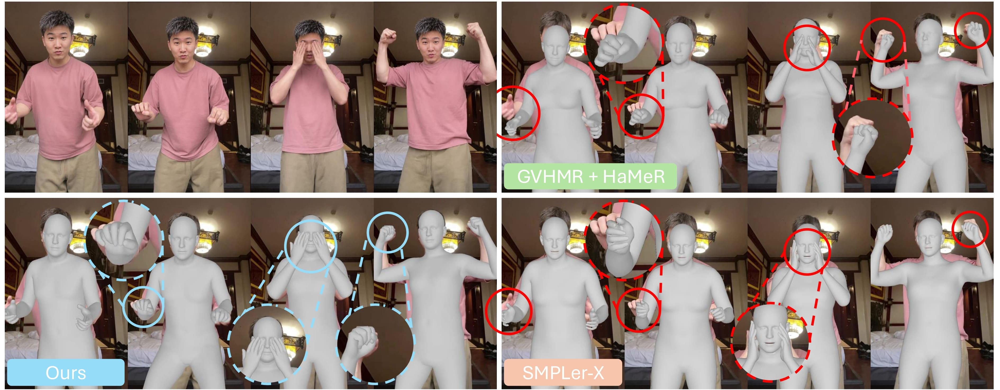
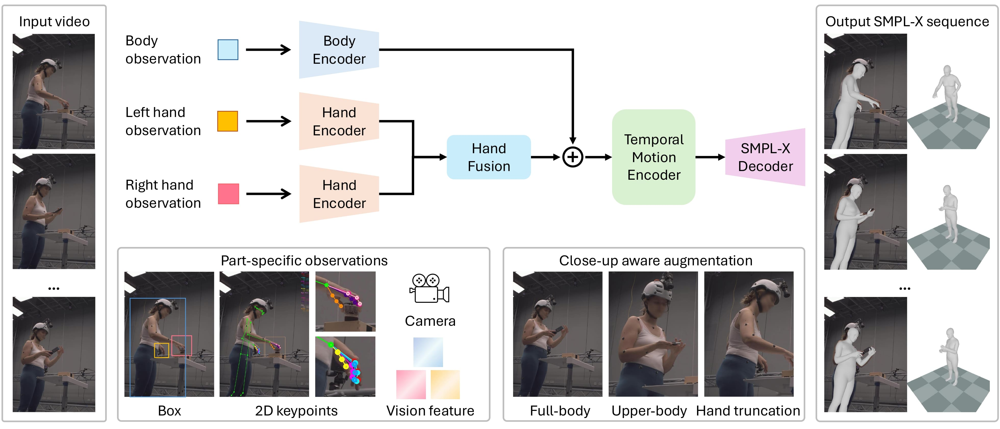

SIGGRAPH Asia 2026
Hand-Aware Whole-Body Human Mesh Recovery from Monocular Videos
ByteDance Intelligent Creation
* Equal contribution † Corresponding author
Unable to play this clip. Choose another video to continue.
DanceHMR recovers temporally coherent body and hand motion from a single video, bringing detailed finger articulation into whole-body human mesh recovery.
A single temporal architecture reconstructs coherent SMPL-X body and hand motion.
Residual body-hand fusion connects body context with local hand observations for consistent wrists and articulated fingers.
Close-up-aware augmentation improves robustness to upper-body crops, motion blur, and hands moving out of view.

Monocular video human mesh recovery is essential for digital humans, avatar animation, and embodied simulation, where both temporal stability and expressive whole-body motion are required. Existing video HMR methods produce coherent body motion but often overlook detailed hand articulation, while image-based whole-body methods recover SMPL-X meshes independently per frame, often leading to jittery and inaccurate hand motion.
We present DanceHMR, a temporally coherent whole-body HMR framework for challenging in-the-wild monocular videos. DanceHMR unifies body context and part-specific hand observations through residual body-hand fusion, enabling stable body motion and detailed hand recovery within a single temporal architecture. We further introduce close-up-aware augmentation to improve robustness under upper-body framing. Experiments on whole-body and body-only benchmarks demonstrate improved hand reconstruction, competitive body accuracy, and temporally stable, 2D-consistent SMPL-X motion in real-world videos.
Whole-body and hand reconstruction across different motions and camera framings.

Residual body-hand fusion: Local hand cues refine a body-anchored representation, with body and temporal context supporting recovery under occlusion or blur.
Temporal reconstruction: Joint temporal modeling produces coherent SMPL-X body and hand motion.
Close-up-aware augmentation: Simulated upper-body crops and hand truncation improve robustness to close-up videos.
DanceHMR is trained with a two-stage curriculum on motion capture, synthetic, and in-the-wild video data, including BEDLAM, MOYO, ARCTIC, EgoBody, AMASS, WHAC-A-Mole, 3DPW, and Human3.6M. The second stage places greater emphasis on high-quality SMPL-X and hand-centric data to refine fine-grained hand articulation.
Relative error reductions against the named baselines under the same benchmark protocol.
More accurate hands on ARCTIC, with competitive whole-body reconstruction on both benchmarks.
Protocol 1 · All errors in millimeters (mm).
| Method | PA-PVE | PVE | PA-MPJPE | |||
|---|---|---|---|---|---|---|
| All ↓ | Hands ↓ | All ↓ | Hands ↓ | All ↓ | Hands ↓ | |
| PIXIE | — | — | — | — | — | — |
| Hand4Whole | 63.4 | 18.1 | 136.8 | 54.8 | — | — |
| OSX | 33.0 | 18.8 | 58.4 | 39.4 | — | — |
| PyMAF-X | 49.4 | 14.3 | 70.5 | 45.1 | 56.7 | 15.6 |
| SMPLer-X-B | 54.0 | 17.9 | 85.2 | 53.4 | 55.1 | 18.4 |
| SMPLer-X-L | 46.9 | 18.1 | 76.9 | 50.8 | 47.3 | 17.8 |
| AiOS | 30.2 | 19.2 | 47.1 | 38.3 | — | — |
| SMPLest-X | 26.3 | 11.9 | 43.5 | 28.8 | — | — |
| GVHMR + HaMeR | 41.0 | 13.9 | 71.0 | 54.6 | 55.1 | 11.7 |
| DanceHMR | 28.1 | 8.5 | 44.7 | 24.8 | 29.8 | 8.1 |
Intra-scene split · All errors in millimeters (mm).
| Method | PA-PVE | PVE | PA-MPJPE | |||
|---|---|---|---|---|---|---|
| All ↓ | Hands ↓ | All ↓ | Hands ↓ | All ↓ | Hands ↓ | |
| PIXIE | 61.7 | 12.2 | 168.4 | 55.6 | 66.8 | 12.3 |
| Hand4Whole | 44.8 | 8.9 | 104.1 | 45.7 | 45.5 | 9.0 |
| OSX | 42.4 | 10.8 | 92.4 | 47.7 | 42.9 | 11.0 |
| PyMAF-X | — | — | — | — | — | — |
| SMPLer-X-B | 35.5 | 11.0 | 65.3 | 46.9 | 37.2 | 10.9 |
| SMPLer-X-L | 33.2 | 10.6 | 61.5 | 43.3 | 36.6 | 10.5 |
| AiOS | 32.5 | 7.3 | 58.6 | 39.0 | — | — |
| SMPLest-X | 31.6 | 9.5 | 59.8 | 37.7 | — | — |
| GVHMR + HaMeR | — | — | — | — | — | — |
| DanceHMR | 31.3 | 7.4 | 61.0 | 22.2 | 34.6 | 4.8 |
Bold: best. Underlined: second best. ↓ Lower is better. — Not reported.
Joint temporal modeling reduces hand jitter by 43.2% and hand velocity error by 32.8% relative to GVHMR + HaMeR on ARCTIC.
ARCTIC · Jitter in m/s³; Accel in m/s²; MPJVE in mm/s.
| Method | All | Hands | ||||
|---|---|---|---|---|---|---|
| Jitter ↓ | Accel ↓ | MPJVE ↓ | Jitter ↓ | Accel ↓ | MPJVE ↓ | |
| SMPLer-X-B | 127.5 | 23.8 | 482.6 | 52.1 | 9.9 | 219.9 |
| SMPLest-X | 95.1 | 17.8 | 364.6 | 55.4 | 10.4 | 228.5 |
| GVHMR + HaMeR | 6.0 | 1.8 | 109.0 | 7.4 | 1.6 | 100.7 |
| DanceHMR | 5.4 | 1.5 | 81.3 | 4.2 | 1.5 | 67.7 |
Bold: best. Underlined: second best. ↓ Lower is better. — Not reported.
DanceHMR retains strong body accuracy while recovering articulated hands. On EMDB, MPJPE improves from 67.1 to 64.3 mm compared with DUOMO.
Position errors in mm; acceleration error in m/s².
| Method | PA-MPJPE ↓ | MPJPE ↓ | PVE ↓ | Accel ↓ |
|---|---|---|---|---|
| GVHMR | 37.0 | 56.6 | 68.7 | 5.2 |
| GENMO | 34.6 | 53.9 | 65.8 | 5.2 |
| PromptHMR-Vid | 35.5 | 56.9 | 67.3 | — |
| OSX | 60.6 | 86.2 | — | — |
| SMPLer-X-B | 53.4 | 80.3 | 90.3 | — |
| Multi-HMR | 41.7 | 61.4 | 75.9 | — |
| SMPLest-X | 43.2 | 70.5 | — | — |
| DanceHMR | 35.2 | 53.6 | 65.1 | 4.9 |
Position errors in mm; acceleration error in m/s².
| Method | PA-MPJPE ↓ | MPJPE ↓ | PVE ↓ | Accel ↓ |
|---|---|---|---|---|
| GVHMR | 44.5 | 74.2 | 85.9 | 3.9 |
| GENMO | 42.5 | 73.0 | 84.8 | 3.8 |
| PromptHMR-Vid | 40.1 | 68.1 | 79.2 | — |
| DUOMO | 41.8 | 67.1 | 78.2 | — |
| Multi-HMR | 50.1 | 81.6 | 95.7 | — |
| DanceHMR | 40.1 | 64.3 | 75.4 | 3.5 |
Bold: best. Underlined: second best. ↓ Lower is better. — Not reported.
Results from Tables 1–3 of the camera-ready paper. Reported metrics exclude trajectory refinement. Read the evaluation ↗
@inproceedings{shen2026dancehmr,
title = {DanceHMR: Hand-Aware Whole-Body Human Mesh Recovery from Monocular Videos},
author = {Shen, Wenhao and Zhou, Ming and Zhang, Hengyuan and Bian, Siyuan and Xu, Youjiang and Zhang, Yuan},
booktitle = {Proceedings of the SIGGRAPH Asia 2026 Conference Papers},
series = {SA Conference Papers '26},
year = {2026},
month = nov,
pages = {1--11},
publisher = {ACM},
doi = {10.1145/3829340.3842190},
url = {https://doi.org/10.1145/3829340.3842190}
}